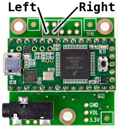
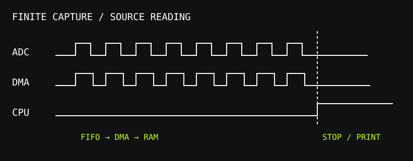
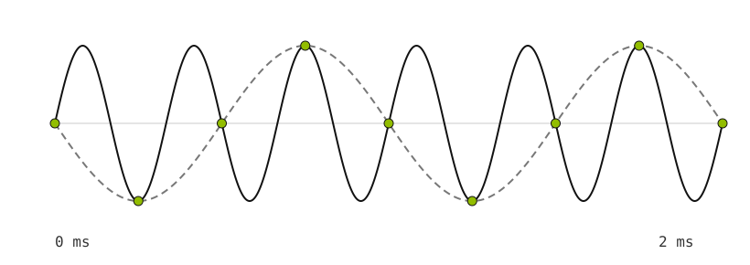
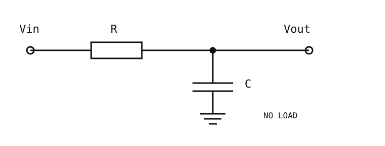
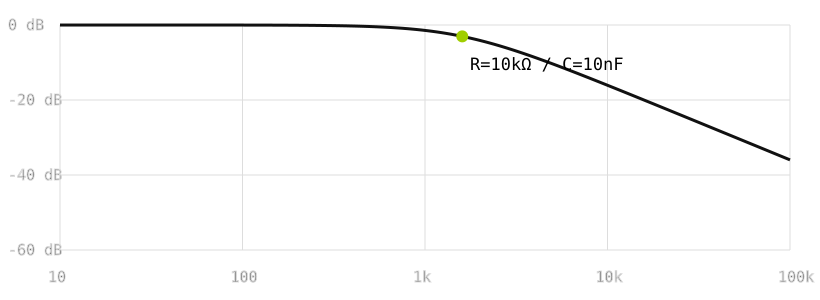

SOUND / PROJECTS & NOTES先看数据通路，
再看声音从哪里进来。
本期从 Teensy Audio 与 DaisyExamples 两个开源项目出发，沿着 ADC、FIFO 和 DMA 理解样本的去向，再读采样、模拟低通与缓存笔记。四条工具发现、制作经验和文化短栏可以独立阅读。
01 / OPEN SOURCE AUDIO两个声音项目，
两种读源码的入口。
Teensy Audio：先看信号怎样连接
Paul Stoffregen 的 Teensy Audio Library 把播放、录音、合成、分析、滤波与混音等功能组织成可以连接的对象。README 说明其流式音频为 16 位、44.1 kHz，面向 Teensy 3.x 与 4.x。值得借鉴的是数据流的组织方式：输入对象产生数据，处理对象变换数据，输出对象把数据送出去。
项目还提供 Audio System Design Tool，用图形连线导出 Arduino 代码，并直接查看对象接口说明。对刚接触声音工程的人，先从一条最短信号链读起，比直接跳进一台复杂合成器更容易判断“样本在哪里、谁来处理、何时交给下一段”。具体输入输出能力仍要对照所用板型与扩展板。

音频扩展板输入接口图 / 来源：PJRC、Paul Stoffregen，Teensy Audio 项目 README；不是本刊上板照片。项目源码 ↗ · 作者的信号链设计工具 ↗ · 库与硬件说明 ↗
DaisyExamples：从一个效果器例子开始
Daisy 的官方示例仓库按硬件平台分组，以 libDaisy 与 DaisySP 为基础组织例子，并把库作为 Git 子模块管理。读者可以同时看到“平台怎样接管音频与控制输入”和“具体声音算法怎样实现”，不必从零搭起整套工程。
这里有个容易忽略的项目经验：只有例子目录，不一定就拥有完整依赖。仓库 README 明确说明递归克隆或初始化子模块，以及先构建库的步骤。选例子时先确认目标板型、依赖与入口，再追踪音频回调怎样读写缓冲；一段算法能编译，不等于能直接用于另一块开发板。
官方示例仓库 ↗ · 官方开发环境说明 ↗本期为项目与源码分享，未进行这两个项目的硬件测试。
02 / SOURCE NOTEBOOK沿着一段官方代码，
找到样本的去向。
从一个具体实现开始：Raspberry Pi 的 adc/dma_capture 例程把 ADC FIFO 接到 DMA，捕获 1000 个 8 位值。它比“在循环里读 ADC 再打印”更适合研究连续采集的数据通路。
GPIO26 / ADC0→ ADC FIFO→ DREQ_ADC→ DMA→ capture_buf[1000]
① 先认清精度在哪改变
ADC 本身提供 12 位结果，但例程开启 FIFO 的右移选项，缓存是 uint8_t，DMA 传输宽度也是 8 位。最后打印的字节不能被称为 12 位录音。想保留更高精度，要一起检查 FIFO、数组类型、传输宽度与错误位处理。
② “搬运时钟”来自哪里
读取地址固定在 ADC FIFO，写入地址逐次增加；DREQ_ADC 用数据就绪状态节流搬运，CPU 不必每个样本都参与。DMA 只解决搬运，真正决定转换节奏的仍是 ADC 时钟与分频配置。
③ 为什么先捕获，再打印
例程等 DMA 完成，停止 ADC、清空 FIFO，之后才输出数据。这个顺序把采样与串口输出分开；它是一次有限长度捕获，不是一个已经完成的持续录音系统。要连续录音，还需缓冲轮换、溢出统计和输出吞吐管理。
④ 留意例程的附加电路
该例程还在第二核心用 PIO 驱动参考 VGA 板的电阻 DAC，产生三角波供测试。没有那块板时，不要把这部分当成 Pico 上自带的模拟输出。先区分输入采集、测试信号源和外接硬件，再决定删改哪部分。

原创数据流示意 / 对应源码顺序，不是逻辑分析仪测量。阅读入口：搜索 DMA_SIZE_8、set_read_increment、set_write_increment 和 DREQ_ADC，逐项写出“读哪里、写哪里、多久搬一次、搬多少”。先在纸上回答，再改代码，能少掉许多把字节数当样本数的错误。
官方例程 / 固定提交 ↗ · 项目目录 ↗源码阅读，不声称已编译或上板。
03 / PROJECT & TOOL DISCOVERIES四个入口，
各解决一个具体问题。
01 / ANALOG
CircuitJS1：先把 RC 画出来
浏览器电路模拟器，源自 Paul Falstad 的项目，由 Iain Sharp 移植到浏览器。适合在焊接前熟悉元件关系：建立输入源—串联 R—对地 C，输出取电容两端，再比较文中两组 R、C 配置。官方部署支持导入和导出电路文本，下一次不用从截图重画。
可以接着做：改变输出负载，观察它与本页“空载”模型的差别；若比较暂态波形，先等待稳态，再量幅度。
打开模拟器 ↗ · 原项目 ↗
02 / DIGITAL DOCUMENTATION
WaveDrom：用文字画时序
它把 WaveJSON 转成 SVG 数字时序图，适合整理 SPI、片选、请求与应答之间的关系。项目记录里写一段可修改的时序描述，比只留下示波器照片更容易解释“预期是什么”。但图由描述生成，不能冒充对真实设备的测量。
可以接着做：下载本期的请求—应答样例，在编辑器里把应答延后一个格子，再导出 SVG 写进项目笔记。
在线编辑器 ↗ · 本期样例 ↓ · 原项目 ↗
03 / FIRMWARE
rp2040js：没有板，也能先走通一段逻辑
Wokwi 的开源 RP2040 JavaScript 模拟器。README 提供原生固件、MicroPython、CircuitPython 的运行入口，也列出若干在线例子。可先研究程序启动、串口输出或按键逻辑，再把设备差异交给真实板子核验。
边界要记住：README 说明其示例文件系统写入仍有限制。它不替代 ADC 噪声、模拟前端或真实音频时序的板上测量。
项目与运行说明 ↗
04 / RETRO SOUND
GB Studio：把短声音放进自制游戏
官方音效文档支持把 WAV、Game Boy 格式 VGM 和 FX HAMMER 的 SAV 放进 assets/sounds，再通过 Play Sound Effect 事件使用。WAV 建议很短、8 位单声道，文档给出的长度上限约 3.64 秒；其他格式会尝试转换。
可以接着做：把已有短录音在音频软件里整理，再尝试导入。注意核对声道数、存储位深和时长，不要只修改文件扩展名。本期未运行 GB Studio 构建。
官方音效文档 ↗
04 / KNOWLEDGE · SAMPLING3 kHz 的信号，
为什么会留下 1 kHz 的序列？
在 4 kHz 采样率下，每隔 0.25 ms 读取一个值。对于零相位正弦，3 kHz 输入与反相 1 kHz 输入在这些时刻给出相同的离散值。数字系统只拿到点，无法从这组点唯一还原原来的高频。

原创数学示意 / 黑实线为 3 kHz，灰虚线为反相 1 kHz，绿点为共同的采样值；非硬件测量。这不是把“音质调低”那么简单。混叠会把带外成分折入可见的低频，后级数字低通无法识别它原先来自哪里。应在采样之前约束输入带宽，并给实际滤波器留过渡带。
采样关系示意；输入恰在某些整数或半整数采样率边界时，正弦还可能采成近零序列。下方数值记录使用远离这些特殊边界的对照例子。数字音频概念 / MDN ↗
05 / KNOWLEDGE · RESOLUTION采样率与位深，
解决的是不同的问题。
横向：什么时候取一个值
采样率决定样本的时间间隔。把 3 kHz 正弦从 8 kHz 采样改为 4 kHz，输入就越过了奈奎斯特频率，产生混叠。提高位深并不能消除这个错误，因为问题已经发生在时间轴上。
纵向：把这个值记得多细
位深决定可表示的电平数。固定时间间隔，只改变位深，样本时刻不变，幅值却必须落在更稀疏或更密集的电平上。量化误差可能随信号呈现规律，不宜把低位深失真一概叫作白噪声。
下面的编辑计算采用一个明确模型：−1 到 +1 等距分布 2B 个电平，按最近电平取整，步长为 2 / (2B − 1)，未加入抖动。它说明量化怎样改变数据，不等同某一款 ADC 的完整行为。
文件存储宽度还要另外看：将 12 位或更低精度的样本装进 16 位 WAV，并不会恢复丢掉的精度。讨论数据质量和讨论文件大小时，应分别写清“有效信息”与“存储格式”。
06 / EDITORIAL CALCULATION同一组输入，
留下哪些不同的误差？
2026 年 11 月 17 日的编辑计算记录：输入为 2 秒、幅度 0.8 的数学正弦，量化结果已用独立 Python 计算比对。这里保留固定数值，方便与上述原理一起阅读；不是开发板实测。
2026-11-17 · 数字模拟运行记录 / 非硬件采样| 输入 / 采样率 / 位深 | 折叠频率 | 误差 RMS |
|---|
| 3000 Hz / 8000 / 12 bit | 3000 Hz | 0.0001945 |
| 3000 Hz / 4000 / 12 bit | 1000 Hz | 0.0002442 |
| 1000 Hz / 48000 / 3 bit | 1000 Hz | 0.0788175 |
| 1000 Hz / 48000 / 8 bit | 1000 Hz | 0.0027570 |
| 1000 Hz / 48000 / 12 bit | 1000 Hz | 0.0001705 |
RMS 只比较量化前后的同一组采样时刻，不衡量连续信号重建误差，也不是 ADC 的有效位数或整机信噪比。3 kHz / 4 kHz 这组结果即使量化误差很小，混叠仍然存在。
完整数值记录 ↗
07 / ANALOG NOTES一个电阻，一个电容，
能滤掉多少高频？
在最简单的 RC 低通中，串联电阻，电容对地，输出取电容两端。电容改变时，截止频率随之移动。

原创电路示意 / 理想电压源、理想元件、输出空载；未接开发板。

原创解析曲线 / 10 kΩ、10 nF、理想空载，绿点为 1600 Hz。
- 保持 10 kΩ / 10 nF，截止频率约 1591.5 Hz。在 1600 Hz，衰减接近 −3 dB，输出约为输入的 70.5%。
- 当 C 为 100 nF，截止频率降到约 159.2 Hz；10 倍电容不会让滤波器变陡，只会把同一条曲线向低频移动。
- 当 C 为 10 nF、频率为 8000 Hz：衰减约 −14.2 dB，仍有约 19.5% 的幅度。一个极点的高频渐近斜率是每十倍频率 −20 dB，不是越过截止点就归零。
H(jω) = 1 / (1 + jωRC)
f_c = 1 / (2πRC)
|H| = 1 / √(1 + (2πfRC)²)
这正是“画了一个低通”与“达到抗混叠指标”的距离：还要给出通带、阻带和允许的残余幅度。若 ADC 采样保持电路或下一级形成负载，元件容差、源阻抗和驱动能力也会改变结果；这张理想曲线不代替这些条件下的电路仿真。
公式来自理想阻抗分压关系；编辑计算记录 ↗。图示为数学模型，不是 SPICE 输出或硬件测量。
08 / FIRMWARE NOTES · BUFFER声音采到了，
来得及搬走吗？
采样率只回答“多久来一个样本”。固件还要回答：一个样本占几个字节，缓存何时填满，写卡偶尔停顿时靠什么接住数据？先把字节数与时间预算写清，再选择实现方式。
48 kHz / 16 位存储 / PCM 数据预算| 配置 | 每块 / 双缓冲 | 每块时长 |
|---|
| 单声道 · 256 帧 | 512 B / 1024 B | 5.333 ms |
| 双声道 · 256 帧 | 1024 B / 2048 B | 5.333 ms |
| 单声道 · 1024 帧 | 2048 B / 4096 B | 21.333 ms |
先算一遍：48 kHz、单声道、16 位、每块 256 帧，持续数据量 96 kB/s；一块 512 B，约 5.333 ms 填满。两个缓冲总共 1024 B。切成双声道，字节数加倍，填满一块所需的时间却不变，因为帧数没变。
换一组配置：块长为 1024 帧，处理窗口变为约 21.333 ms，双缓冲占用增加到 4096 B。更大缓存能容纳更长的暂时停顿，但不能解决“长期平均输出速度慢于输入”。本计算使用十进制 kB / MB，不含 WAV 头、文件系统开销或协议封装。
这里计算的是存储宽度：12 位 ADC 结果装进 16 位整数时仍按 2 B 计算。也不要把 DMA 的“帧”与某个外设寄存器宽度混为一谈；固件必须明确一次传输究竟对应一个声道样本还是一整帧。
09 / WORKBENCH NOTES做项目时，
这三件事值得单独记。
01 / 先保留原始样本
把未经归一化的 ADC 值、采样配置和一次捕获的时间范围放在一起保存。只留导出的“好看波形”会隐藏直流偏置、削顶和丢样。先检查最小值、最大值及是否碰到上下限，再决定怎样去直流、缩放和转 WAV。
下一条笔记可以只回答：这次看见的失真发生在模拟输入、量化，还是导出时的数值换算？
02 / 把单位写进名字
sample_count、frame_count、byte_count 不要共用一个含糊的 length。单声道下它们的关系容易被掩盖，切双声道或改成 16 位存储后就会暴露。每块帧数乘以每帧字节数，才得到 DMA 或文件接口所需的字节预算。
记录方法：从单声道改成双声道时，先分别写出每帧字节数、每块字节数和处理窗口，避免把三个量混用。
03 / 原型留出观察位置
画 PCB 时为模拟输入、偏置节点、滤波输出和地参考考虑测试位置。只在连接器留焊盘，可能让下一轮定位问题变得困难；探头地线和负载本身也会影响测量，测试点并非越多越好。把“预期在哪看到什么”写进原理图笔记，再决定放在哪里。
以上为编辑设计建议，不冒充本刊已经制造过一块板的实测经验。
规则确定以后，
还能把什么交给偶然？
ELLSWORTH KELLY
Spectrum Colors
Arranged by Chance II
1951 / 彩色纸拼贴与铅笔 / 97.2 × 97.2 cm
查看 MoMA 原作与馆藏资料 ↗Kelly 在巴黎使用法国学生用的彩色胶纸，把方块组织成网格。1951 年这组拼贴把颜色、单位形状与偶然排列放在一起：规则并未消失，改变的是艺术家决定每一块颜色位置的方式。
值得看的是整体秩序如何从局部重复里形成，而不只是把它看成一张“随机色卡”。MoMA 收藏的 II 号是纸上拼贴；同系列另有后来发展的绘画，不要把材质和年代合成一个对象。看过原作图后，可以试着用同一组彩纸重排两次，比较哪些关系保留下来、哪些因为邻接而改变。
作品信息：MoMA；系列背景：Ellsworth Kelly Foundation ↗。卡片为文字编辑排版，作品图通过馆藏原页查看。
11 / HARDWARE NOTES回到开发板，
先看信号怎样进来。
声源→ 电平适配 / 偏置→ 抗混叠滤波→ ADC→ 缓冲 / 存储
网页里的正弦已经是数字公式；真正接音频时，ADC 面对的是电压。双极性音频若接到单极性 ADC，需要检查偏置、幅度、输入阻抗及保护条件。不要把扬声器输出直接接进 GPIO。
从 ADC 示例开始
Raspberry Pi 的 hello_adc 示例选择 GPIO26 / ADC0，读取 12 位值并打印电压。它适合确认输入通路；循环打印没有建立固定音频采样率，不等于一台采样器。下一步应研究定时采集、FIFO 和 DMA，再决定如何存储音频。
官方示例 ↗本期仅阅读源码，未接板测量。
画 PCB 前，补齐边界
先写出允许的输入电压范围、目标带宽、采样率、参考电压与输入源阻抗，再选择前端拓扑。12 位寄存器不保证 12 位有效精度；电源、参考、布线和模拟噪声都会进入结果。这里不提供未验证的通用音频前端元件值。
继续读，
也看看别人怎样做。
Audacity / 从已有录音看样本
它适合查看已有 WAV 的波形、频谱与电平。讨论一份录音前，先保留原文件，再看有无削顶、直流偏置或明显丢样；频谱结果还受窗口长度和窗函数影响，不能脱离设置只比较一张截图。
项目官网 ↗
MDN / 数字音频的几个边界
数字音频概念一文整理采样率、量化、带宽、压缩与音频处理的基本关系。适合与本文的采样、RC 和缓存笔记交叉阅读，区分数学模型、文件格式和真实硬件的不同限制。
数字音频概念 ↗
旧版 KiCad ERC 内容 ↗作为历史资料保留。本期引用分别见各条原项目与机构链接。